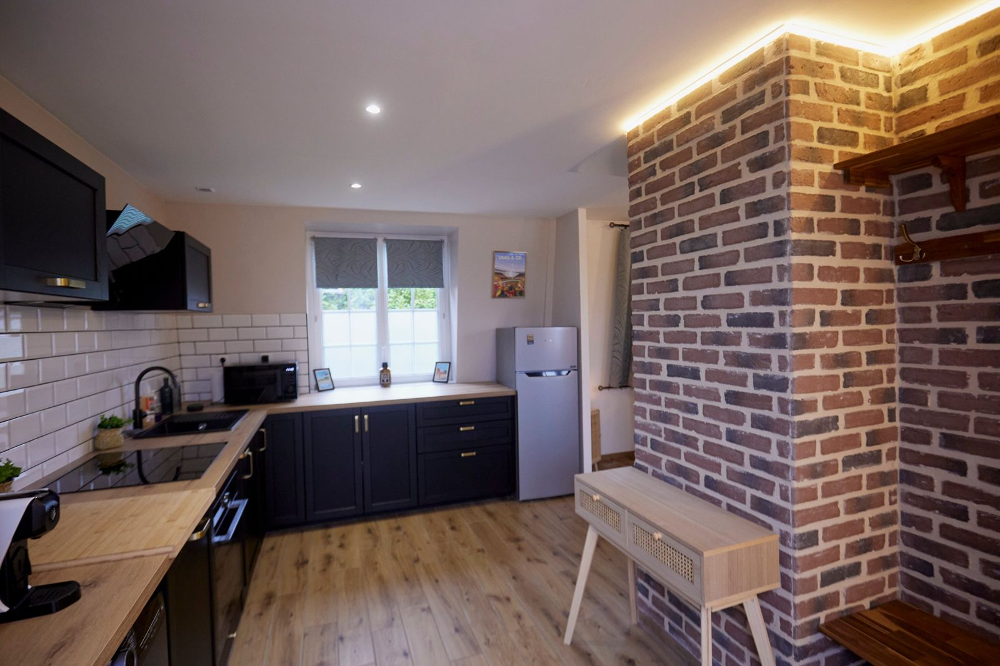
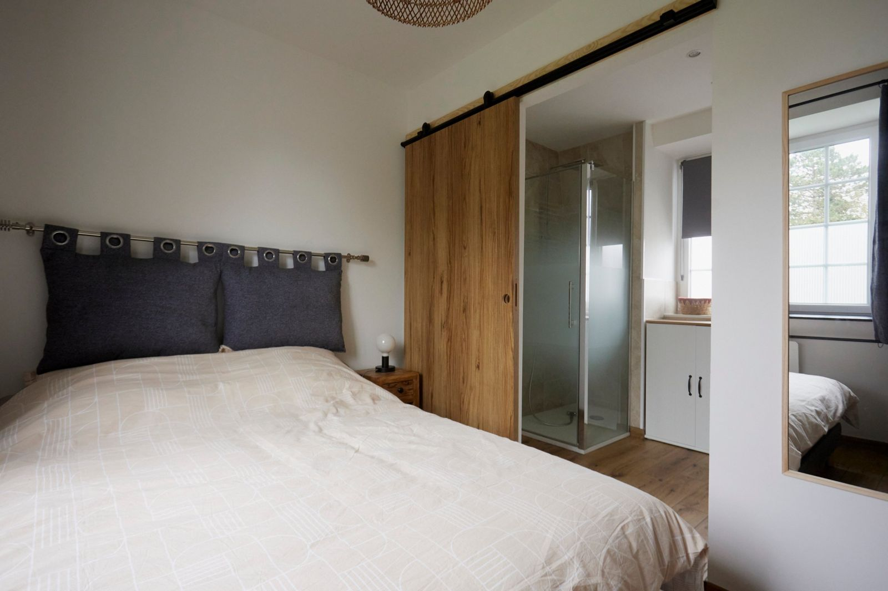

The cottage
A private, self-contained home with its own entrance, decorated in tribute to the region's First World War and mining heritage.



What's inside
- Private entrance, the whole place is yours
- Fully equipped kitchen with oven, hob, microwave and coffee machine
- Double bedroom with shower room
- Living room with TV and dining table
- Washer-dryer, handy on a longer trip
Rates
from €60
per night, no cleaning fee, 1 night minimum
Prices vary with weekends and seasons. Booking direct is always our best price, with no platform fees.
See all photos